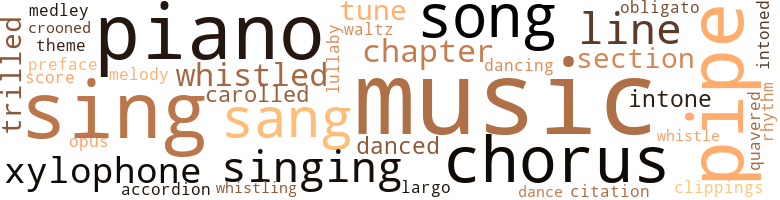
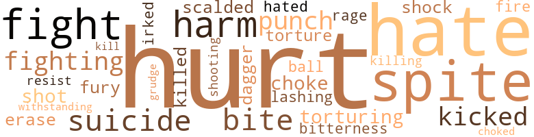
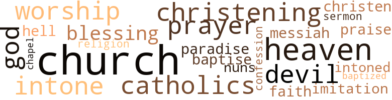

All in the Family, by Wamble, Thelma (1953)
141 music-related terms matched in this text.
Most frequent terms in this topic: music (23); piano (12); pipe (12); sing (12); chorus (8)
accordion.n.01
Definition: a portable box-shaped free-reed instrument; the reeds are made to vibrate by air from the bellows controlled by the player
| word | sentence |
|---|---|
| accordion | It had an attached full accordion pleated skirt of plaid taffeta and over this was a black chinese jacket , lined with the plaid and caught at the neck with two large frogs of the plaid material . |
carol.v.01
Definition: sing carols
| word | sentence |
|---|---|
| carolled | " Then it 's all settled - you 're just as happy for me as your mentality permits , " she carolled . |
| carolled | " Uncle Davie , I 'm so happy it hurts , " Jean carolled as the others gathered around to congratulate Neil and to wish them both happiness . |
chapter.n.01
Definition: a subdivision of a written work; usually numbered and titled
| word | sentence |
|---|---|
| chapter | " We should n't have any trouble getting the book ac - cepted , " Mark laughed , as they completed another chapter , " now that you 've been made Chief-of-Staff . " |
| chapter | You 'll note that one chapter of the book goes into some detail as to how the place came into being . |
| chapter | Mark opened the book to the first chapter and began to read . |
| chapters | After he had outlived his musical mood , he stretched himself out on the couch in front of the fire and read several chapters of Devley 's " Peace by Proxy . " |
chorus.n.01
Definition: any utterance produced simultaneously by a group
| word | sentence |
|---|---|
| chorus | All right , fellows , let 's stay together on a chorus or two of ' Smilin ' Through . ' " |
| chorus | John and I are recruiting a male chorus from the employees . |
| chorus | Thy kingdom come , Thy will be done , in earth as it is in heaven , " and as the chorus joined him at this point in a special arrangement of the sacred offering , the entire congregation seemed spell-bound . |
| chorus | " Give us this day our daily bread , " they prayed together , then as the chorus hummed through the next few bars , Shelby 's clear notes could be heard above the organ and chorus . |
| chorus | " Give us this day our daily bread , " they prayed together , then as the chorus hummed through the next few bars , Shelby 's clear notes could be heard above the organ and chorus . |
| chorus | As the last chords of the chorus died away , Paul immediately thundered forth the majestic strains of Frost 's " Avonley March " and almost as one , the whole audience filed out without a spoken word . |
| chorus | Both Shelhy and the chorus would have made the most calloused person aware of its greatness . |
| chorus | Once he started to mention the chorus but Nanee and Crystal looked far too grim for what he had to say so he thought better of it . |
clipping.n.01
Definition: an excerpt cut from a newspaper or magazine
| word | sentence |
|---|---|
| clippings | " I found some old newspaper clippings in my former home in Chicago . |
croon.v.01
Definition: sing softly
| word | sentence |
|---|---|
| crooned | " Hello , darling , " she crooned . |
dance.n.01
Definition: an artistic form of nonverbal communication
| word | sentence |
|---|---|
| dance | David was browsing over a copy of the medical journal and Crystal had some soft dance music on . |
dance.v.02
Definition: move in a pattern; usually to musical accompaniment; do or perform a dance
| word | sentence |
|---|---|
| dancing | At midnight when the orchestra began to play " Auld Lang Syne , " Mark was dancing cheek to cheek with Gabrielle . |
dance.v.03
Definition: skip, leap, or move up and down or sideways
| word | sentence |
|---|---|
| danced | They danced among themselves but kept rather quiet . |
| danced | " Well , you 're annoyed at something , " her eyes danced in half-amusement , then she added softly . |
foreword.n.01
Definition: a short introductory essay preceding the text of a book
| word | sentence |
|---|---|
| preface | " In my preface I 'd point out that we need prevention rather than a cure . |
largo.n.01
Definition: (music) a composition or passage that is to be performed in a slow and dignified manner
| word | sentence |
|---|---|
| Largo | " I was taking a short cut through the recreation hall this afternoon when I heard someone playing Beethoven 's Farewell to the Piano and something else , oh yeah , my favorite Largo from Handel 's Messiah . |
lullaby.n.01
Definition: a quiet song intended to lull a child to sleep
| word | sentence |
|---|---|
| lullaby | They sat together under a blanket of stars listening to Bizet 's opera and Shelby rested his head on Mark 's shoulder and listened as a child to a lullaby . |
marimba.n.01
Definition: a percussion instrument with wooden bars tuned to produce a chromatic scale and with resonators; played with small mallets
| word | sentence |
|---|---|
| xylophone | The first thing he saw in his sitting room was Nanee 's small piano and his own xylophone . |
| xylophone | He squared off in front of the xylophone and raised his arms up and down as if to loosen his joints . |
| xylophone | He 's always playing it on his xylophone . " |
| xylophone | Mark played the xylophone while Gabrielle stretched out on the couch and relaxed . |
| xylophone | He got up and played the xylophone for a while , enjoy - ing the strangeness of his mood as only he could enjoy it . |
medley.n.01
Definition: a musical composition consisting of a series of songs or other musical pieces from various sources
| word | sentence |
|---|---|
| medley | " I know an Easter medley though . |
music.n.01
Definition: an artistic form of auditory communication incorporating instrumental or vocal tones in a structured and continuous manner
| word | sentence |
|---|---|
| music | He took out the sheet of music from behind the music stand and handed it to her . |
| music | " How about some dinner music ? " |
| music | " Speaking about music , I heard the most wonderful music this afternoon - and right in the sanitarium , " Mark said to David . |
| music | " Speaking about music , I heard the most wonderful music this afternoon - and right in the sanitarium , " Mark said to David . |
| music | " Nothing can take away one of these beastly headaches for me as quickly as good music . " |
| music | " The music sounds familiar . " |
| Music | " Music and firelight , " Mark closed his eyes . |
| music | Mrs. Archer is having her Wednesday Club in for tea , and Madame Josephine Talcott , the prima donna is - " A high note echoed from behind the door of the music room . |
| music | " If you women keep on jabbering , we 'll never hear the music , " Neil said . |
| music | Then the stirring music of Beethoven 's Concerto for Piano and Orchestra in E-flat Major , rang through the hall . |
| music | Did you ever hear such music in your life ? " |
| music | " I simply adore Leigh 's music , " Jean cut in . |
| music | " For real music , there 's nothing like a Paul Bartell re - cord , " Crystal said . |
| music | Shelby went over to the piano and picked up a sheet of music . |
| music | " This calls for a celebration in music , " Shelby said . |
| music | Dr. Lavelle 's study - a room on the first floor - would be Jean 's music room ; and since it opened into the spacious dining room , Jean foresaw enviable entertainment possibilities in this arrangement . |
| music | " Thanks for the beautiful music . " |
| music | Mark stopped the music once , long enough to get a pillow for her , then went back and took up where he had left off . |
| music | When he went in he found his god-father lying across the bed - the radio turned low to soft music . |
| music | " A little music for Vernon , there , fellows . |
| music | " Is n't music something new at the House of Milo ? " |
| music | " Where did you learn music , John ? " |
| music | David was browsing over a copy of the medical journal and Crystal had some soft dance music on . |
| music | " I do n't play too well but I love music . |
musical_composition.n.01
Definition: a musical work that has been created
| word | sentence |
|---|---|
| opus | " You have just heard , " the announcer said , " Beethoven 's Concerto for Piano and Orchestra in E-flat Major , no. 5 , opus 73 , Paul Bartell , soloist , under the direction of the Chicago Home Symphony . " |
obbligato.n.02
Definition: a part of the score that must be performed without change or omission
| word | sentence |
|---|---|
| obligato | Giant trees flurried nosily in the mountain breeze ; while out in the thickets , whip-poor-wills kept up a stirring obligato as though singing of past loves . |
piano.n.01
Definition: a keyboard instrument that is played by depressing keys that cause hammers to strike tuned strings and produce sounds
| word | sentence |
|---|---|
| piano | We only know that one day he saw the piano and sat down and played as if his heart would break . |
| piano | She tuned in on a piano selection . |
| piano | Shelby leaned expectantly over the piano . |
| piano | But a concert is an expensive proposition and right now I 've been away from the piano and public for so long that I do n't know - " " You can easily stay overnight , " Crystal said . |
| piano | There 's a piano up in the third floor study and you can have your choice of three master bedrooms . " |
| piano | He hesitated at the side of the piano before sitting down . |
| piano | It was beginning to snow and Crystal stopped dusting the baby grand piano for a moment to observe the thick falling flakes . |
| piano | Shelby went over to the piano and picked up a sheet of music . |
| piano | Paul sat down at the piano . |
| piano | The first thing he saw in his sitting room was Nanee 's small piano and his own xylophone . |
| piano | Helaine sat down at the piano and ran her fingers lightly over the keys . |
| piano | " I did n't know you played , " Shelby said , bend - ing over the piano . |
pipe.n.04
Definition: a tubular wind instrument
| word | sentence |
|---|---|
| pipe | He entered the library on the crest of sophomoric flamboyance , clicking his pipe against his teeth and reciting one of William Cullen Bryant 's poems with gusto : " Oh fairest of the rural maids ! |
| pipe | Mark merely sat and smoked his pipe calmly . |
| pipe | Mark refilled his pipe slowly . |
| pipe | He folded the paper , put it aside , then prepared his pipe . |
| pipe | Mark frowned as he lit his pipe then laid the letter on the end table . |
| pipe | Mark fished in his pocket and came up with his pipe and began packing it . |
| pipe | Mark lit his pipe . |
| pipe | Nanee folded her arms and watched Mark pack his pipe . |
| pipe | Mark stood up and lit his pipe . |
| pipe | He filled his pipe thoughtfully , glancing surreptitiously at Shelby who had retreated into a corner and was thumbing through a fashion magazine . |
| pipe | He dropped the ledger on the table , walked over to the fireplace and picked up his half-filled pipe . |
| pipe | He reached for his pouch , packed his pipe and lit it slowly , reflectively . |
quotation.n.02
Definition: a passage or expression that is quoted or cited
| word | sentence |
|---|---|
| citation | At the June Academy dinner , the occasion of the official citation , Mark and Crystal sat by and beamed like two polished buttons as David took his bows . |
rhythm.n.04
Definition: the arrangement of spoken words alternating stressed and unstressed elements
| word | sentence |
|---|---|
| rhythm | " A good friend of ours is here watching this show so the boys and I are going to wrap up one of his favorite tunes in the old Sangster rhythm , especially for him . |
score.n.02
Definition: a written form of a musical composition; parts for different instruments appear on separate staves on large pages
| word | sentence |
|---|---|
| score | Right now I have an old score to settle with my stomach . " |
section.n.01
Definition: a self-contained part of a larger composition (written or musical)
| word | sentence |
|---|---|
| section | " I asked Dr. Findley about him and he said he is in your section . " |
| section | Sometime later , Shelby arrived home with his guest , John , whom he directly escorted to Crystal 's section of the house , thus allowing Nanee full dignity in her desire to maintain " status quo . " |
| section | He spread the second section of the paper on the bed and looked , first at the headline , then the three fashion displays below . |
sing.v.02
Definition: produce tones with the voice
| word | sentence |
|---|---|
| sing | " Right this minute , I like to draw and sing . " |
| sing | " Why have n't I heard you sing all this week , then ? |
| sing | Mark never told me you could sing . " |
| sing | " You sing beautifully , Shelby . " |
| sing | She asked me to sing for her . " |
| sings | He sings beautifully . |
| sang | " All aboard , " David sang out . |
| sang | Again her trees had reluctantly given their children back to the earth whence they had come ; small winter birds sang throaty songs ; the garden clearings had been stripped of all food so that only frost-bitten waste remained . |
| sing | " This calls for a real celebration and if you can stand two surprises in one night , I 'm going to sing for you tonight . " |
| sing | I 've been studying with Paul but this is my first time to sing in public . " |
| sang | Paul played softly and as Shelby sang , " O Holy Night , " his mother was moved to shameless tears . |
| sang | The others joined in as Shelby sang the second verse . |
| sing | " Let 's sing a Thanksgiving song . |
| sing | We 'll sing that . |
| sang | Paul played spiritedly , and the others sang - Shelby lustily and loudly . |
| sing | " Shelby 's going to sing , ' O , Promise Me , ' " Jean said . |
| sing | I remember she encouraged him in his sing - ing and that won his heart completely and then as he 's grown older - " There was a long silence at the other end of the wire . |
| sing | Mark had come at Shelby 's request to hear him and the Milo Male Chorus sing . |
| sang | Paul began to play Malotte 's " The Lord 's Prayer , " and Shelby sang " Our Father Which Art in Heaven - hallowed be Thy Name . |
singing.n.01
Definition: the act of singing vocal music
| word | sentence |
|---|---|
| singing | They just do n't think singing is im portant . " |
| singing | Giant trees flurried nosily in the mountain breeze ; while out in the thickets , whip-poor-wills kept up a stirring obligato as though singing of past loves . |
| singing | " Who 's singing ? " |
| singing | He was surprised when he heard the minister solemnly intone that with the singing of the last number the congregation would rise and leave the sanctuary quietly . |
| singing | Certainly the singing was excellent . |
song.n.01
Definition: a short musical composition with words
| word | sentence |
|---|---|
| song | " The Emperor Waltz ; is his theme song . " |
| songs | Again her trees had reluctantly given their children back to the earth whence they had come ; small winter birds sang throaty songs ; the garden clearings had been stripped of all food so that only frost-bitten waste remained . |
| song | Dr. Bruce had promised the chaplain at the hospital he would bring his family to the morning song service , so all the men came down ready to go over as soon as the presents were opened . |
| song | Dr. Bruce got the group out to song service , leaving Gabrielle , Mark and Jenson behind . |
| song | " Mark , have you ever heard a song about ' a heathen in his blindness ? ' |
| songs | " You 've picked songs I 've always liked . |
| song | " That 's Mark 's favorite song . |
theme.n.03
Definition: (music) melodic subject of a musical composition
| word | sentence |
|---|---|
| theme | " The Emperor Waltz ; is his theme song . " |
tone.v.01
Definition: utter monotonously and repetitively and rhythmically
| word | sentence |
|---|---|
| intone | The black ' robed Dr. Palmer clasped his book firmly and began to intone : " Dearly beloved , we have gathered here ... " They all bowed their heads but Mark stole an occasional quick glance at Helaine . |
| intoned | " Dinner 's served , " Jenson intoned , and the little group happily and hungrily went in and took their places at the beautifully set table . |
| intone | He was surprised when he heard the minister solemnly intone that with the singing of the last number the congregation would rise and leave the sanctuary quietly . |
tune.n.01
Definition: a succession of notes forming a distinctive sequence
| word | sentence |
|---|---|
| line | " I hate to see him go but I 'm glad he has something in his line . |
| melody | The melody has been running in and out of my mind all morning . " |
| line | " Right on the 50-yard line , " he added , while biting into another sausage . |
| tune | You 're still calling the tune . " |
| line | " I 've been wondering when you 'd get to my punch line . |
| tunes | " A good friend of ours is here watching this show so the boys and I are going to wrap up one of his favorite tunes in the old Sangster rhythm , especially for him . |
| lines | There were punch lines of every description : anger , treachery , suspense , humor , loyalty and even an appeal to passion and prejudice . |
| tunes | Mark galloped down the stairs , whistling one of his aimless tunes . |
| line | They 're line . |
waltz.v.01
Definition: dance a waltz
| word | sentence |
|---|---|
| waltz | " Yes , and it was there that dad taught me to read my first baseball score card and Crystal showed me how to waltz , " He broke off . |
warble.v.01
Definition: sing or play with trills, alternating with the half note above or below
| word | sentence |
|---|---|
| trilled | Crystal trilled . |
| trilled | " My love for Neil is so near perfect it frightens me , " she trilled as she tried on her dress for the last fitting . |
| quavered | It 's Mom , " her voice quavered . |
| trilled | " Is n't he handsome ? " she trilled . |
whistle.v.01
Definition: make whistling sounds
| word | sentence |
|---|---|
| whistled | Mark whistled . |
| whistled | Mark whistled . |
| whistling | Mark galloped down the stairs , whistling one of his aimless tunes . |
| whistled | A log fire whistled and crackled in the huge fireplace and Mark went and stood in front of it , rubbing his hands to " gether . |
| whistled | Mark whistled . |
| whistle | Shelby brightened , as they heard the approaching train whistle . |
62 violence-related terms matched in this text.
Most frequent terms in this topic: hurt (9); hate (7); spite (5); harm (3); fight (3)
blister.v.02
Definition: subject to harsh criticism
| word | sentence |
|---|---|
| scalded | " How do you like your assistants , scalded a nice rosy pink , or just plain green with inexperience ? " |
dagger.n.01
Definition: a short knife with a pointed blade used for piercing or stabbing
| word | sentence |
|---|---|
| dagger | " Nanee thought I had been neglecting the only gosh awful redhead in the family dreadfully and so she forced me to write to you at dagger 's point . |
defy.v.01
Definition: resist or confront with resistance
| word | sentence |
|---|---|
| withstanding | Shelby was sure he had always loved Mark and that not ' withstanding public opinion , nothing could ever be wrong with his kind of love for Mark 's kind of man . |
erase.v.01
Definition: remove from memory or existence
| word | sentence |
|---|---|
| erase | " Besides it 'll be easier for me to erase all the family secrets I accidentally put down , and which you are supposed to know nothing about . " |
fight.n.05
Definition: a boxing or wrestling match
| word | sentence |
|---|---|
| fight | I 'll not give him up without a fight , though ; most of the heavy odds are on me ( Smile . ) |
fight.v.02
Definition: fight against or resist strongly
| word | sentence |
|---|---|
| fighting | Besides he never quite finished fighting the war . " |
| fight | The family left him alone , feeling it wisest to let him fight the battle alone . |
| fights | Nobody who fights it or why . " |
| fighting | France had capitulated so that Great Britain was now fighting for her very existence and practically alone . |
| fight | " The army 's no place to fight political battles , " Mark said . |
fury.n.01
Definition: a feeling of intense anger
| word | sentence |
|---|---|
| fury | He got out his car and in a fury headed for the village . |
| rage | On the verge of honest rage he sat down at his desk and scribbled : " Dear Gabrielle , The world can thank its lucky stars men have other important work , along with pink teas and petting pap ties . |
gag.v.06
Definition: cause to retch or choke
| word | sentence |
|---|---|
| choke | You can listen to him and not choke while you eat . " |
| choked | " I 'll think about it , " she choked . |
gall.v.02
Definition: irritate or vex
| word | sentence |
|---|---|
| irked | Letter writing had always been an irksome task to him but he would have been equally irked not to have answered this one . |
grudge.n.01
Definition: a resentment strong enough to justify retaliation
| word | sentence |
|---|---|
| grudge | " There 's no reason for him to bear a grudge against you . |
harm.v.01
Definition: cause or do harm to
| word | sentence |
|---|---|
| harm | " It wo n't harm you to lie down for a half hour before dinner , either . " |
hate.v.01
Definition: dislike intensely; feel antipathy or aversion towards
| word | sentence |
|---|---|
| hate | " I hate to think of the kind of situation I might have faced otherwise . |
| hate | " I hate to see him go but I 'm glad he has something in his line . |
| hate | " I hate to impose on you , Shelby , but - " " It 's a pleasure , Shelby interrupted . |
| hated | Jean hated last minute rushes and so did Neil . |
| hate | " I hate to write - always did , " Mark defended himself . |
| hate | You know how I hate promises and to tell you the truth , " he added , " there would be no sense to a promise like that . |
| hate | " I hate the smell of horses , " Jenson puckered his face distastefully . |
| hate | Sometimes I hate the idea of going to college . |
hurt.v.04
Definition: cause damage or affect negatively
| word | sentence |
|---|---|
| hurt | He knows I could never hurt you , no matter how much I may be hurt . " |
injury.n.01
Definition: any physical damage to the body caused by violence or accident or fracture etc.
| word | sentence |
|---|---|
| harm | " There 's no harm in trying . |
| harm | " But if you do n't want to be a doctor , then you 'd do the profession more harm than good . |
| hurt | I guess he felt it looked like some kind of charity and felt hurt . " |
| hurt | " Unappreciated in in my own house , too , " Shelby assumed a hurt expression . |
| hurt | I love them both , but I wo n't stand by and see Helaine hurt , Mark , " Shelby explained . |
kick_back.v.02
Definition: spring back, as from a forceful thrust
| word | sentence |
|---|---|
| kicked | Mark took a look at the hassock which appeared to be set out for him , kicked it aside and kissed his aunt 's cool forehead . |
| kicked | He kicked the flaming logs in place and baptized them with a healthy flow of tobacco juice . |
kill.v.10
Definition: cause the death of, without intention
| word | sentence |
|---|---|
| killed | My father was killed in an auto accident when I was thirteen . |
| killing | The next day Leigh Sangster 's friends and fans received a terrible shock - his plane had crashed , killing him instantly . |
| kill | " In his present condition , it would probably kill him , " Mark said bluntly . |
malice.n.01
Definition: feeling a need to see others suffer
| word | sentence |
|---|---|
| spite | " You have no idea how disappointed we all are about things here - But in spite of our reverses , I still feel it was better to let you stay on with Dr. Lynne in Chicago to finish your residency . . . I 'm afraid your homecoming is in strange contrast to your father 's . " |
| spite | But I 've often wondered if I 'm not sexually retarded , in spite of all that 's happened . |
| spite | Nanee looked thoroughly composed in spite of Jean 's unscheduled appearance . |
| spite | This he had done in spite of all the promises he had made to himself . |
| spite | Mark mastered a smile in spite of himself . |
musket_ball.n.01
Definition: a solid projectile that is shot by a musket
| word | sentence |
|---|---|
| ball | " Either Shelby 's got a lot on the ball or it 's just that your figure does things to satin . " |
open_fire.v.01
Definition: start firing a weapon
| word | sentence |
|---|---|
| fire | Mark banked the leaves , and watched Jean fire them and as the dancing flames chased each other , Jean came over and put her arm around Mark 's midsection . |
pain.v.02
Definition: cause emotional anguish or make miserable
| word | sentence |
|---|---|
| hurt | " Did Nanee say something to hurt you ? " |
| hurt | " It ca n't hurt , " Mark grinned , his old enthusiasm returning . |
| hurt | " I do n't know if he was really hurt or not , " Shelby said . |
| hurt | He knows I could never hurt you , no matter how much I may be hurt . " |
| hurt | " You ca n't hurt his feelings like that . " |
punch.n.01
Definition: (boxing) a blow with the fist
| word | sentence |
|---|---|
| punch | " This has a whale of a punch . |
| punch | I 've been in the kitchen spicing the punch . " |
resentment.n.01
Definition: a feeling of deep and bitter anger and ill-will
| word | sentence |
|---|---|
| bitterness | Wondering where they can land a job , " Mark said , with a trace of bitterness . |
resist.v.04
Definition: withstand the force of something
| word | sentence |
|---|---|
| resist | He drew Helaine closer to him and was happy that she made no effort to resist . |
shock.n.02
Definition: the violent interaction of individuals or groups entering into combat
| word | sentence |
|---|---|
| shock | " I 'm getting permission to start shock treatments and then he may be returned to one of the veterans ' hospitals in the Chicago area . |
shoot.v.02
Definition: kill by firing a missile
| word | sentence |
|---|---|
| shot | Your nerves are shot to blazes , Whinchat . |
shooting.n.02
Definition: killing someone by gunfire
| word | sentence |
|---|---|
| shooting | They laughed again and John said , " No kidding , I bet you anything when the shooting 's all over , the Negro will be fifty years in the rear again . |
sting.n.03
Definition: a painful wound caused by the thrust of an insect's stinger into skin
| word | sentence |
|---|---|
| bite | " I wo n't eat a bite unless I sit next to you . " |
| bite | I waited up , thinking he might want a bite to eat . " |
suicide.n.01
Definition: the act of killing yourself
| word | sentence |
|---|---|
| suicide | " There was one fellow , " Shelby went on , " a sophomore who told us he had a brother who committed suicide at seventeen . " |
| suicide | She had never liked the United States and when her husband com - mitted suicide , she had abandoned her child and home . |
torment.v.01
Definition: torment emotionally or mentally
| word | sentence |
|---|---|
| torturing | " Why do n't you marry her and stop torturing yourself ? " |
| torture | " I hope Helaine 's around so I wo n't have to stand this torture for long . " |
whip.v.04
Definition: strike as if by whipping
| word | sentence |
|---|---|
| lashing | He started lashing me with his belt . |
40 religion-related terms matched in this text.
Most frequent terms in this topic: church (5); prayer (2); worship (2); Catholics (2); christening (2)
baptize.v.01
Definition: administer baptism to
| word | sentence |
|---|---|
| christening | So , before leaving his office , he sat down and wrote Leigh and Helaine a note offering his own home for the christening in case they should come East before Helaine 's mother returned . |
| christening | We 're going to have the christening at our place . " |
| christen | And on a warm Sunday in May , Dr. Palmer came to christen the Sangster baby . |
| baptise | " Leigha Sangster , " Dr. Palmer proceeded , " I baptise you in the name of the Father and of the Son and of the Holy Ghost ... " The ceremony was brief and after the prayer came several lusty cries from the center of activity . |
| baptized | He kicked the flaming logs in place and baptized them with a healthy flow of tobacco juice . |
blessing.n.05
Definition: the act of praying for divine protection
| word | sentence |
|---|---|
| blessings | " This is a good time of year to count our blessings , " Na nee said quietly . |
| blessing | " Rollie 's death was a blessing in a way , " she added . |
catholic.n.01
Definition: a member of a Catholic church
| word | sentence |
|---|---|
| Catholics | Though we are not Catholics , we appreciate the solemnity and dignity they attach to worship . |
| Catholics | " It 's a tradition with us , just as Irish Catholics mother priests and nuns . " |
chapel.n.01
Definition: a place of worship that has its own altar
| word | sentence |
|---|---|
| chapel | He had known these grounds since early childhood - the cluster of buildings , the wooded knoll , the large T-shape administration building , the chapel half-obscured under the lavish ropes of clinging vines , and the red-brick hospital , but this was the first time that the beauty of it all stirred him . |
church.n.02
Definition: a place for public (especially Christian) worship
| word | sentence |
|---|---|
| church | And once a week I work with the choirmaster and choir at Dr. Palmer 's church , and I play the organ twice on Sunday . " |
| church | " She attends his church when she 's in the city . " |
| church | " Besides I have so few contacts that - " " But I should think you 'd meet some nice people in the church , " Crystal broke in . |
church.n.04
Definition: the body of people who attend or belong to a particular local church
| word | sentence |
|---|---|
| church | He had already said his good-byes to Nanee , Dr. Bruce and Shelby , who had left for the special Easter services at the village church . |
| church | " We went to church last Sunday and here I waive all levity . |
| Church | On Christmas Sunday , with the pangs of Pearl Harbor still gnawing at their very vitals , the congregation of Park Avenue Methodist Church sat in rapt attention throughout the short , appropriate service . |
confession.n.05
Definition: the document that spells out the belief system of a given church (especially the Reformation churches of the 16th century)
| word | sentence |
|---|---|
| confession | He still felt bewildered by Crystal 's frank confession and Shelby 's surprising ability to detect his mother 's hidden feelings . |
eden.n.01
Definition: any place of complete bliss and delight and peace
| word | sentence |
|---|---|
| heaven | " How in heaven 's name could I ever tell my friends my son is an art major ? " |
| Paradise | I 've been to Paradise Beach and the Sea Gardens . |
| Heaven | Paul began to play Malotte 's " The Lord 's Prayer , " and Shelby sang " Our Father Which Art in Heaven - hallowed be Thy Name . |
| heaven | Thy kingdom come , Thy will be done , in earth as it is in heaven , " and as the chorus joined him at this point in a special arrangement of the sacred offering , the entire congregation seemed spell-bound . |
god.n.03
Definition: a man of such superior qualities that he seems like a deity to other people
| word | sentence |
|---|---|
| God | " Why does God torment us this way ? |
| God | " Dearly Beloved , " he began , " We are gathered together here in the sight of God and in the presence of these witnesses , to join this man and this woman in holy matrimony . |
hell.n.01
Definition: any place of pain and turmoil
| word | sentence |
|---|---|
| hell | " Let 's just settle for one pig and to hell with the other two animals . |
imitation.n.01
Definition: the doctrine that representations of nature or human behavior should be accurate imitations
| word | sentence |
|---|---|
| imitation | Shelby came up and announced the arrival of " Dr. Ray Frederick Palmer and Paul Bartell , " in his best imitation of Jenson and the others laughed at his mockery . |
messiah.n.03
Definition: the awaited king of the Jews; the promised and expected deliverer of the Jewish people
| word | sentence |
|---|---|
| Messiah | " I was taking a short cut through the recreation hall this afternoon when I heard someone playing Beethoven 's Farewell to the Piano and something else , oh yeah , my favorite Largo from Handel 's Messiah . |
nun.n.01
Definition: a woman religious
| word | sentence |
|---|---|
| nuns | " It 's a tradition with us , just as Irish Catholics mother priests and nuns . " |
praise.n.02
Definition: offering words of homage as an act of worship
| word | sentence |
|---|---|
| praise | " But you deserve all you get , judging from the praise Gabrielle heaps upon your head . " |
prayer.n.01
Definition: the act of communicating with a deity (especially as a petition or in adoration or contrition or thanksgiving)
| word | sentence |
|---|---|
| prayer | " Leigha Sangster , " Dr. Palmer proceeded , " I baptise you in the name of the Father and of the Son and of the Holy Ghost ... " The ceremony was brief and after the prayer came several lusty cries from the center of activity . |
| prayer | Jean had never been concerned with the matter of prayer before but if this was the only way she could be sure of Neil , she would pray . |
religion.n.01
Definition: a strong belief in a supernatural power or powers that control human destiny
| word | sentence |
|---|---|
| faith | " Still do n't have much faith in me , do you , young lady . " |
| religion | War and religion are two subjects I never touch , " he laughed . |
satan.n.01
Definition: (Judeo-Christian and Islamic religions) chief spirit of evil and adversary of God; tempter of mankind; master of Hell
| word | sentence |
|---|---|
| devil | " Speak of the devil , " Crystal said , as she heard Mark pull under the drive shed and make his usual three-point landing . |
| devil | " Speak of the devil , here he comes now , " Crystal laughed , as Hank stomped in , carrying a turn of firewood . |
sermon.n.02
Definition: a moralistic rebuke
| word | sentence |
|---|---|
| sermon | Mark was so intrigued by all the goings on about him that he missed most of Dr. Palmer 's brief sermon . |
tone.v.01
Definition: utter monotonously and repetitively and rhythmically
| word | sentence |
|---|---|
| intone | The black ' robed Dr. Palmer clasped his book firmly and began to intone : " Dearly beloved , we have gathered here ... " They all bowed their heads but Mark stole an occasional quick glance at Helaine . |
| intoned | " Dinner 's served , " Jenson intoned , and the little group happily and hungrily went in and took their places at the beautifully set table . |
| intone | He was surprised when he heard the minister solemnly intone that with the singing of the last number the congregation would rise and leave the sanctuary quietly . |
worship.n.01
Definition: the activity of worshipping
| word | sentence |
|---|---|
| worship | Though we are not Catholics , we appreciate the solemnity and dignity they attach to worship . |
| worship | Others had come to worship and still others had come to see and be seen . |